|
|
HELP FIND THE FOLLOWING LOCATIONS
RANDALL AND
HOPKIRK [DECEASED]: The Ghost Who Saved the Bank at Monte
Carlo
(Jeremy Summers: June 1969)
Miami International Airport, Miami, Florida, United States of America
- The aeroplane carrying
Jeff, Jean and Marty's Aunt Clara to Monte Carlo arrives in France.
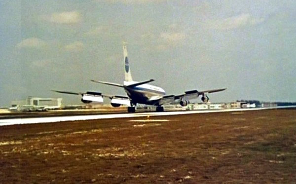
 Also seen in THE CHAMPIONS: The Gun Runners as Craig's plane docks at Rangoon Airport.
Also seen in THE CHAMPIONS: The Gun Runners as Craig's plane docks at Rangoon Airport.
Unknown 1 - The aeroplane carrying Jeff, Jean and Marty's Aunt Clara back home takes off from France.
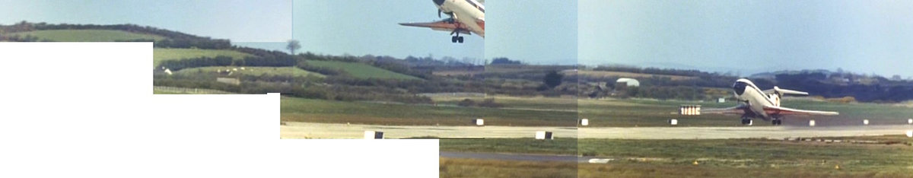
 Edinbrugh Airport?
Edinbrugh Airport?
THE CHAMPIONS: The Gun Runners (Robert Asher:
February 1967)
Heathrow Airport
-Craig's leaves his plane after arriving at Rangoon Airport.
(Identified with help from Pprune.org and Goldox, March 2022)
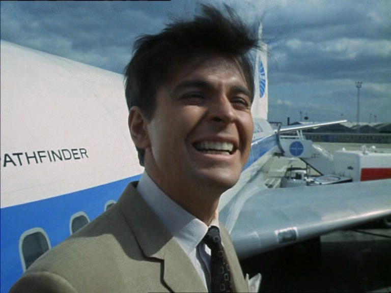
THE SAINT:
Double Take
(Leslie Norman: April 1969)
Luton Airport
-
The fake Eugene Patroclos' Rolls Royce arrives at Athens Airport. The
plane
takes off before Simon and Patroclos can stop it.
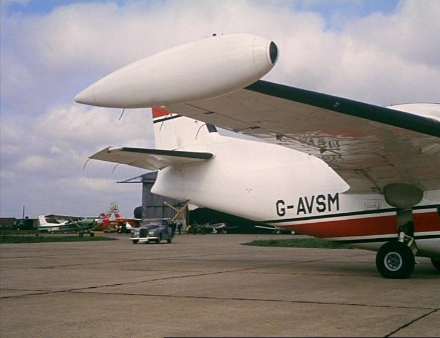
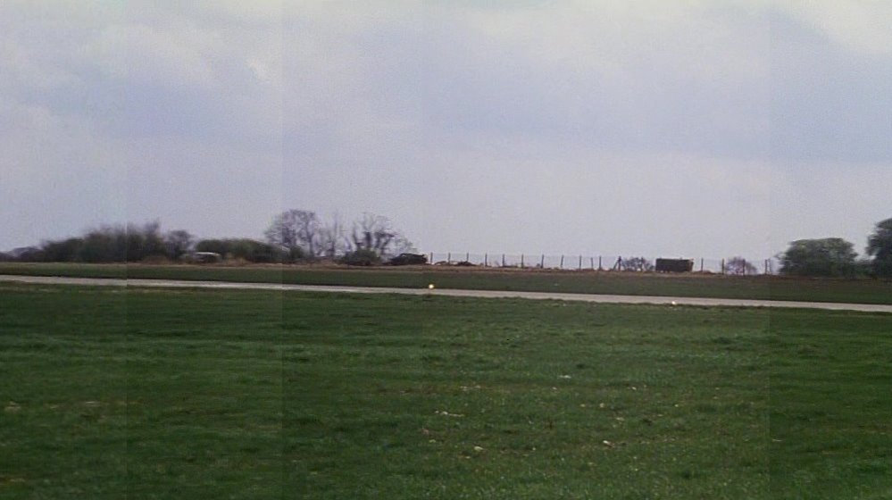
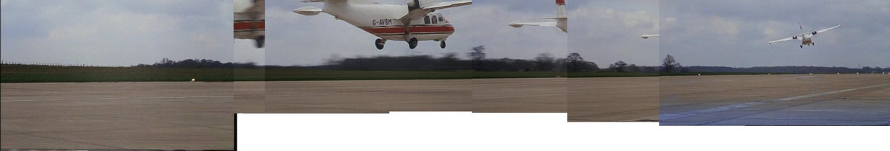
DANGER
MAN: The
Hunting Party (Pat Jackson: 1965)
Unknown 1
- Drake flies out of London
to investigate the Jordans’ at
their Chateau on the Loire.

DANGER
MAN: Judgement
Day (Don Chaffey: 1965)
Unknown 6
– Aircraft is made ready to
fly to BajJabrin BirAzhad.
Aircraft flies from Amman to BirAzhad then has to make an
emergency landing in the desert.
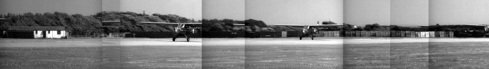
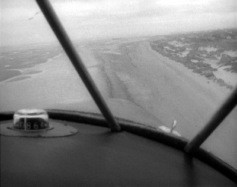
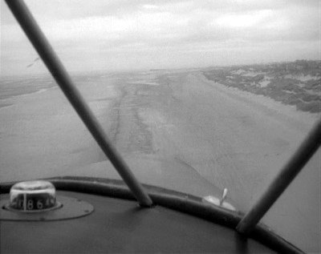

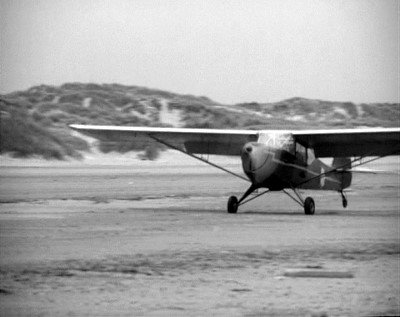
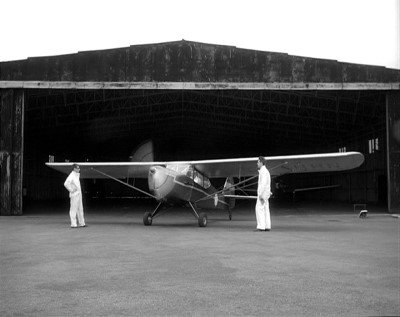
 Aircraft
was G-AHHN, an Auster
J/1 Autocrat destroyed in a hangar fire in Belfast 1987. It was at the
Biggin Hill Air Show in 1960.
Aircraft
was G-AHHN, an Auster
J/1 Autocrat destroyed in a hangar fire in Belfast 1987. It was at the
Biggin Hill Air Show in 1960.
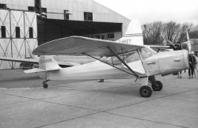
DANGER
MAN: Fish
on a Hook (Robert Day: March 1964)
Seattle-Tacoma International Airport, Washington, U.S.A.
– Drake Flies into Egypt.
(Identified by "Liffy 1M," subscriber to Pprune.org, alerted by Goldox, February 2022)

 Also
seen in Dr. NO
as
Jamaican international airport
Also
seen in Dr. NO
as
Jamaican international airport
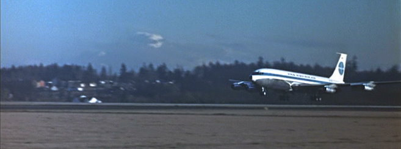
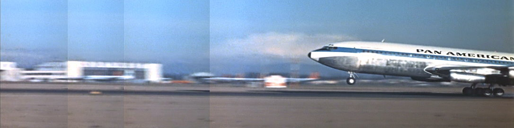
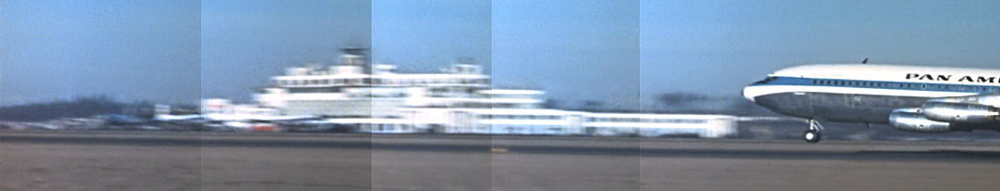
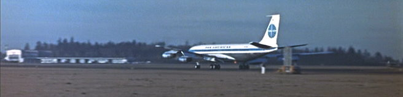
DANGER
MAN: Yesterdays
Enemies (Charles Crichton: 1964)
Unknown1 – The BEA Comet with Drake
and Archer aboard taxis to the runaway.
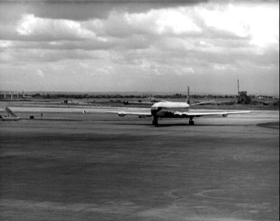
DANGER
MAN: The
Man Who Wouldn’t Talk (Michael Truman: 1965)
Schiphol Airport – Drake arrives at Istanbul
Airport

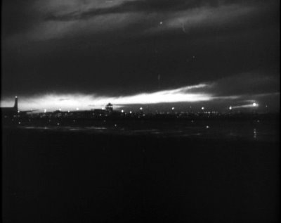
DANGER
MAN: Koroshi
(Michael
Truman: 1965)
Unknown 1
- Sanders tries to escape in
a light plane, but Drake uses a Jeep to prevent him from taking off.

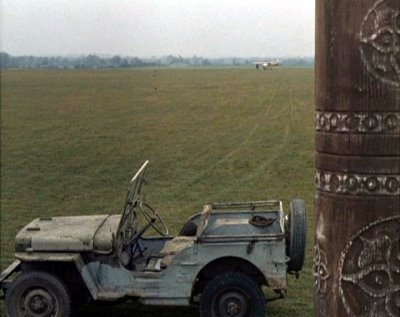

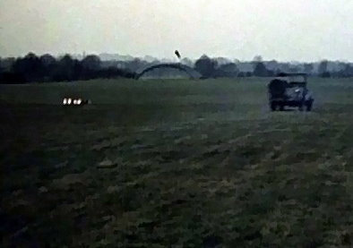
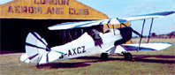
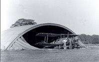
 The
hangar at Panshanger
The
hangar at Panshanger
DEPARTMENT S: The Perfect Operation
(Cyril Frankel:
February 1969)
Unknown 1 -
Jason King flies back from Istanbul.
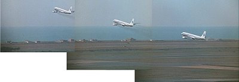
Think you know a spot? Need a bigger image? Email me.
< Previous | Index | Avengerland | Next >
Copyright © 2021 Anthony R. McKay